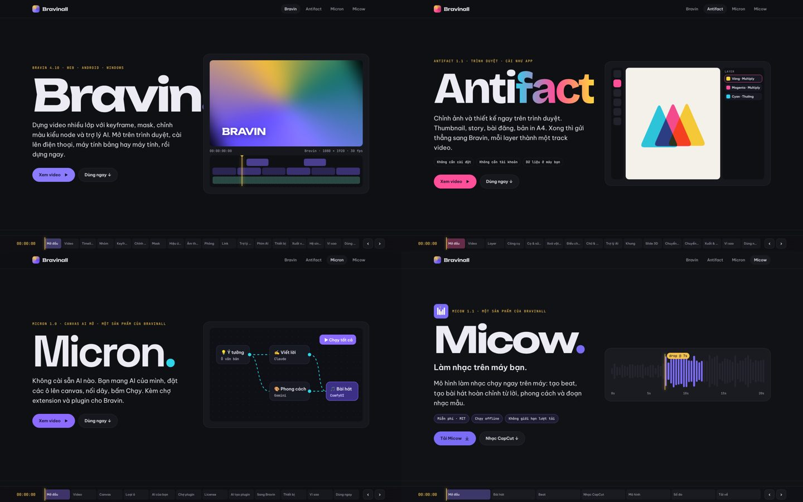

Phạm Việt Hà
Phạm Việt Hà
Mục lục
Beta là công ty mẹ do Phạm Việt Hà sáng lập. Ý tưởng đứng sau rất đơn giản: mọi thứ mình cần để làm nội dung, gồm dựng video, thiết kế, dùng AI và làm nhạc, mình tự xây. Tất cả chạy ngay trên trình duyệt hoặc trên máy của bạn.

Sơ đồ hệ sinh thái
| Thành phần | Vai trò |
|---|---|
| Beta | Công ty mẹ |
| Bravinall | Nhà của bốn ứng dụng sáng tạo |
| Bravin | Dựng video: web, Android, Windows |
| Antifact | Thiết kế và chỉnh ảnh trên trình duyệt |
| Micron | Canvas AI mở và chợ plugin |
| Micow | Mô hình làm nhạc chạy trên máy |
| Beta Holding | Hệ thống tác tử AI tự vận hành |
| Beta HQ | Văn phòng 2.5D xem các tác nhân AI làm việc trực tiếp |
Bốn ứng dụng của Bravinall
Bravin: dựng video
Bravin là trình dựng video nhiều lớp với keyframe, mask, chỉnh màu kiểu node và trợ lý AI. Bravin chạy trên trình duyệt, cài được lên Android và Windows. Khu Phim AI dựng phim ngắn từ kịch bản. Đọc về Bravin.
Antifact: thiết kế
Antifact chỉnh ảnh và thiết kế thumbnail, story, bài đăng, bản in A4 ngay trên trình duyệt. Thiết kế xong, bạn gửi thẳng sang Bravin, mỗi layer thành một track video. Đọc về Antifact.
Micron: canvas AI
Micron không cài sẵn AI nào: bạn mang AI của mình, đặt các ô lên canvas, nối dây, bấm Chạy. Micron đồng thời là chợ plugin cho Bravin. Đọc về Micron.
Micow: làm nhạc
Micow là mô hình làm nhạc chạy ngay trên máy. Micow tạo beat, tạo bài hát hoàn chỉnh từ lời và phong cách, và cắt nhạc CapCut có drop đúng giây. Đọc về Micow.
Các sản phẩm nối với nhau thế nào
Điểm mạnh của Beta không nằm ở từng app riêng lẻ mà ở các đường nối giữa chúng:
- Antifact → Bravin: thả file Antifact vào Bravin, mỗi layer thành một track, giữ vị trí, thứ tự và keyframe.
- Micron → Bravin: nút "Gửi sang Bravin" đưa ảnh, giọng đọc, video từ Micron vào thư viện hoặc timeline của Bravin.
- Micow → Bravin: Micow xuất lời dạng
.lrcvà dự án Bravin 9:16 để dựng video theo nhịp nhạc. - Chợ plugin Micron: cài plugin như Motion Tracking, Micron AI cho cả Micron và Bravin.
Beta HQ và Beta Holding
Beta Holding là hệ thống tác tử AI tự vận hành: theo dõi nhịp tim hệ thống, tìm repo mã nguồn mở hữu ích, tìm việc treo thưởng cho hệ sinh thái. Beta HQ biến tất cả thành một văn phòng 2.5D: mỗi sản phẩm là một phòng, mỗi tác nhân AI là một nhân vật.
 Đọc thêmBeta HQ: văn phòng 2.5D nơi các tác nhân AI của Phạm Việt Hà làm việc trực tiếp
Đọc thêmBeta HQ: văn phòng 2.5D nơi các tác nhân AI của Phạm Việt Hà làm việc trực tiếp
Vì sao một người làm được cả hệ sinh thái?
Phạm Việt Hà làm việc cùng các tác nhân AI. Mỗi sản phẩm Beta đều có kiểm thử trước khi phát hành, đều chạy được ngay (không cần đăng ký tài khoản), và dữ liệu nằm trên máy người dùng. Kiến thức nền là cử nhân Trí tuệ nhân tạo và kỹ sư phần mềm, cộng với sáu năm làm hình ảnh để biết người làm nội dung thực sự cần gì.
 Trang chủ BravinallXem video giới thiệu và thử tính năng của cả bốn ứng dụng
Trang chủ BravinallXem video giới thiệu và thử tính năng của cả bốn ứng dụng